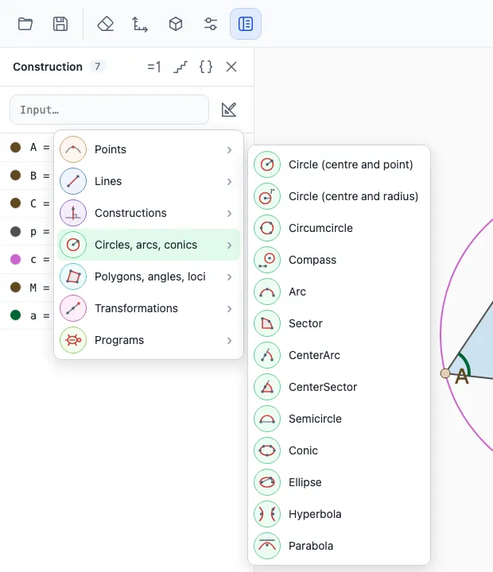
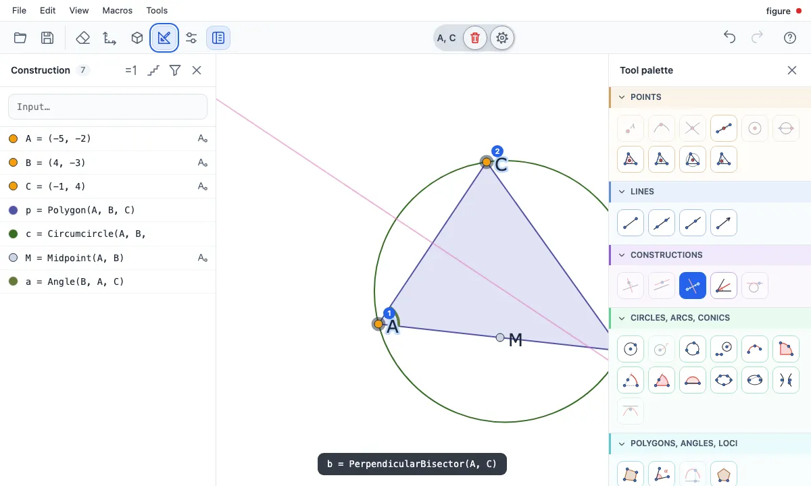

The tools menu

Usage
- , to the right of the input line, opens the menu: the families of the ring, same colors, same order, then their tools on hover or touch.
- The menu holds all the tools of the ring and more (badge ring below). The Planes and Solids families and the tools marked 3D only appear in 3D view.
- The Programs family, the menu’s own, creates turtles and buttons (see Blocks and turtle).
- The first designated object takes any place its type accepts: for a perpendicular, the line may come before the point.
- Arguments can also be designated in the “Construction” panel: the rows of the objects the tool accepts are highlighted in green, the others faded. A hidden object can be designated there too. A point can be designated there only if it already exists, and the intersection of two curves is their first one. While the tool is held, a click on a row does not edit it. A row already designated turns blue, with its place in the command (1, 2…).
- The tool is persistent: after each object, it waits for its first argument again. The menu button takes its icon and the bar shows a banner with Done.
- An argument designated with Shift is kept: the tool takes it again after each object, until you leave it. Shift-click the axis of a reflection, then click each object to reflect; likewise the center of concentric circles. The Keep d button in the hint does the same (with a finger, for instance); Change d asks for it again. Neither for the ring’s tool nor for objects selected before the tool.
- Exit: Done, Esc, ✕ of the prompt, the menu button (which reopens the menu), the eraser, step by step, or a click in the input line. Undo, redo, the properties and the 3D view keep the tool.
With a selection
Objects selected first become the arguments of the chosen tool: see Building by multiple selection.
Transforming an object
- A transformation first takes what defines it (center, axis, vector, circle), then the point or object to transform: segment, line, ray, vector, polygon, circle, arc, conic, function graph, locus; in 3D also a plane, a sphere, a polyhedron (except by an inversion).
- Under the pointer, a point comes first, then the object; in empty space, a point is created. Hovering shows the image, pale.
- The image is of the same kind as the object: a polygon for a polygon, a circle for a circle… A function graph, a locus or an arc of a conic has a locus as its image.
- By an inversion, a line or a circle has a circle as its image, or a line if it passes through the center; a polygon, a polygon with curved sides.
- The image takes its object’s color, fill, size, opacity and dashes. It can’t be dragged, but a point can be placed on it.
- To transform several objects, designate the center or the axis with Shift (kept argument).
The tool palette

- in the bar, or View › Tool palette, opens on the right all the geometric tools of the menu, laid out flat, by families in the same colors (without Programs), then the figure’s macros.
- It takes the place of the properties panel: opening one closes the other, without dropping the tool in hand.
- Clicking a family’s title folds or unfolds it; DocGeo remembers it.
- Clicking a tool takes it, as in the menu; once pressed, a second click drops it.
- With the palette open, clicking an object selects it without opening a ring, and clicking an empty spot deselects it. The tools that do not take the object, or the multiple selection, are grayed out.
- Hovering over a tool shows its line in the prompt. If the selected objects are enough for it, the object it would build appears pale.
- Esc drops the tool or the selection, then closes the palette.
- On a small screen, the palette covers the figure and closes as soon as a tool is chosen. Below 500 px wide, its button disappears: the menu remains.
All the tools
For each tool: what you designate, then the line written.
Points
-
PointringThe point you touch: free on an empty spot, on an object, or at the intersection of two objects.
Point(c, t) -
IntersectionringA crossing with a single touch, or the two objects one after the other.
Intersection(a, b) -
MidpointringTwo points, or a segment.
Midpoint(A, B) -
CenterringA circle: its center.
Center(c) -
OtherIntersectionTwo objects, then a point already placed on one of their intersections: the intersection point farthest from it.
OtherIntersection(a, b, P) -
IncenterThree points, vertices of a triangle: the center of its incircle.
Incenter(A, B, C) -
CentroidThree points: the centroid of the triangle.
Centroid(A, B, C) -
CircumcenterThree points: the center of the circumcircle.
Circumcenter(A, B, C) -
OrthocenterThree points: the orthocenter of the triangle.
Orthocenter(A, B, C)
Lines
-
SegmentringTwo points, its endpoints.
Segment(A, B) -
LineringTwo points of the line.
Line(A, B) -
RayringTwo points: the origin, then a point of the ray.
Ray(A, B) -
VectorringTwo points: the tail, then the head.
Vector(A, B)
Constructions
-
PerpendicularringA point and a line, in any order. In 3D, a line or a plane.
Perpendicular(P, d) -
ParallelringA point and a line, in any order.
Parallel(P, d) -
PerpendicularBisectorringTwo points, or a segment.
PerpendicularBisector(A, B) -
AngleBisectorringThree points: a point of the first side, the vertex, a point of the second side.
AngleBisector(A, O, B) -
TangentA point, then a circle, a conic or the graph of a function. The tool gives tangent no. 1; change this number to 2 in its line for the other one.
Tangent(P, c, 1)
Circles, arcs, conics
-
Circle (centre and point)ringThe center, then a point of the circle.
Circle(O, A) -
Circle (centre and radius)ringThe center alone: in the ring, hold the icon, move the mouse or finger, then release to set the radius. From the menu or palette, the initial radius is about 150 pixels. Change it afterwards by dragging the circle or editing its line.
-
CircumcircleringThree points of the circle.
Circumcircle(A, B, C) -
CompassTwo points that give the radius, then the center.
Compass(A, B, O) -
Circle (centre, direction and radius)3DThe center, then a line (the axis) or a plane (parallel to the circle), the floor included. Radius about 150 pixels.
Circle(O, 3.8, d) -
Circle (axis and point)3DA line, the axis, then a point of the circle.
Circle(d, P) -
ArcThree points: the start, a point it passes through, the end (in 3D, in their plane). Or a circle or an ellipse, then the start and the end (counterclockwise).
Arc(A, B, C),Arc(c, P, Q) -
SectorAs for the arc, three points, or a circle or an ellipse and two points: the sector it bounds.
Sector(A, B, C),Sector(c, P, Q) -
CenterArcThe center, the start, then a point of the ray where the arc stops (counterclockwise). In 3D, the arc of the angle AMB, in its plane.
CenterArc(M, A, B) -
CenterSectorAs
CenterArc: the sector.CenterSector(M, A, B) -
SemicircleTwo points, endpoints of the diameter: the semicircle to the left of [AB].
Semicircle(A, B) -
ConicFive points of the conic. From the second one on, the preview shows the conic closest to a circle.
Conic(A, B, C, D, E) -
EllipseThe two foci, then a point of the ellipse.
Ellipse(F, G, P) -
HyperbolaThe two foci, then a point of the hyperbola.
Hyperbola(F, G, P) -
ParabolaThe focus, then the directrix.
Parabola(F, d)
Polygons, angles, loci
-
PolygonringThe vertices one by one, then the first one again to close.
Polygon(A, B, C) -
AngleringThree points: a point of the first side, the vertex, a point of the second side.
Angle(A, O, B) -
LocusringA point that depends on a point on object: its locus as that point runs along its object.
Locus(M, P) -
RegularPolygonTwo consecutive vertices: the tool gives a square; change the number of sides in its line.
RegularPolygon(A, B, 4)
Transformations
-
Point reflectionringThe center, then the point or object to transform.
Reflect(O, P) -
Line reflectionringThe axis, then the point or object to transform.
Reflect(d, P) -
RotationThe center, then the point or object: a quarter turn, which you change in its line.
Rotation(O, P, 90) -
TranslationThe vector, then the point or object.
Translation(u, P) -
DilationThe center, then the point or object: a ratio of 2, which you change in its line.
Dilation(O, P, 2) -
InversionThe circle of inversion, then the point or object.
Inversion(c, P)
Planes
-
Plane3DThree points, or a point and a line.
Plane(A, B, C) -
ParallelPlane3DA point and a plane (the floor included): the parallel plane through the point.
ParallelPlane(A, p) -
OrthogonalPlane3DA point and a line: the plane orthogonal to the line.
OrthogonalPlane(A, d)
Solids
-
Spherering3DThe center, then a point of the sphere.In a point’s tool ring, this tool is beside the circles.
Sphere(O, A) -
Cylinder3DTwo points, ends of the axis. Radius about 150 pixels.
Cylinder(A, B, 3.8) -
Cone3DThe center of the base, then the apex. Radius about 150 pixels.
Cone(A, B, 3.8) -
Cube3DTwo points of the same plane or at the same height, otherwise three points (see 3D).
Cube(A, B, C) -
Prism3DA polygon, the base, then a point, vertex of the opposite face.
Prism(p, P) -
Pyramid3DA polygon, the base, then the apex.
Pyramid(p, S) -
Section3DA solid (sphere, cylinder, cone, polyhedron) and a plane, in any order.
Section(s, p) -
Net3DA cube, a prism or a pyramid: its flat net.
Net(c, 1)
Programs
-
TurtleA point, or an empty spot that creates one: the turtle starting from that point, opened in blocks.
TURTLE_INIT("A", A) -
ButtonWhere its arrow goes: the button, its program opened in blocks.
Button("Run") -
When the object is draggedA point that can be dragged: the program run when it is dragged, opened in blocks.
-
When the object is pressedA point that can be dragged: the program run when it is pressed, opened in blocks.
-
When the object is releasedA point that can be dragged: the program run when it is released, opened in blocks.
-
When the value changesAn expression: the program run when its value changes, opened in blocks.
Macros
-
New macroThe objects selected as first initials: a macro’s definition; the figure’s macros follow (see Macros).
Transformations build the image of a point or an object (see
Transforming an object).
Keyboard only: FixedPoint, Vertex,
Slider, List, the intersections in
space, Ellipse(F, G, a) and
Hyperbola(F, G, a) (see
Commands).